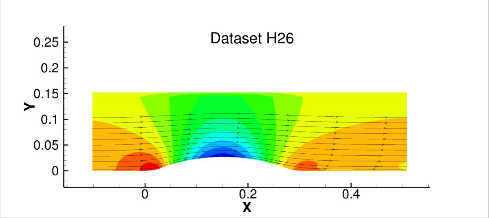

Public Access (formerly Langley Research Center)Turbulence Modeling Resource |
LES: 2-D Family of Bumps
Return to: Data from LES - Intro Page
Return to: Turbulence Modeling Resource Home PageThe data on this page were provided by R. Matai.
These LES data are for a family of five 2-D
bumps of various heights, some of which result in separation.
The inlet Re_theta is 2500. The incompressible wall-resolved
LES was computed using OpenFOAM with the dynamic Smagorinsky subgrid model.
Additional details concerning the data,
code, and computational methodology can be found in:
Note that an earlier paper (Singh, A. P., Matai, R.,
Duraisamy, K., Durbin, P. A. (2017) "Data-Driven Augmentation of Turbulence Models for Adverse Pressure Gradient Flows,"
AIAA-2017-3626, AIAA Aviation Forum, Denver, CO) included preliminary versions of these LES computations.
Two of the five configurations are shown as color contour plots of pressure plus streamlines below,
followed by the Cp and Cf from all five configurations.

The LES data files are given here:
Return to: Data from LES - Intro Page
Recent significant updates:
04/02/2019 - updated LES_bump_family.tar.gz to include a more compatible IGS file
Page Curators: Christopher Rumsey,
Ethan Vogel,
Clark Pederson
Last Updated: 02/22/2022